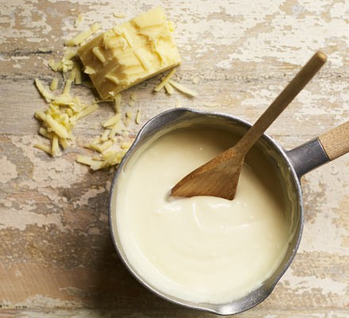

Back to Main Page
Cheese Sauce

Description
This classic, storecupboard white sauce is loaded with strong cheddar cheese. Our easy recipe is ready in 15 minutes.
Use to make macaroni or cauliflower cheese.
Ingredients
- 500ml milk
- 4 tbsp plain flour
- 50g butter
- 100g grated strong cheddar
Steps
- Pour 500ml of milk into a large saucepan and add 4tbsp plain flour and 50g butter.
- Turn on the heat to medium and start to whisk the mixture.
Keep whisking fast as the butter melts and the mixture comes to the boil -
the flour will disappear and the sauce will begin to thicken.
- Whisk for another 2 mins while the sauce bubbles then stir in 100g of grated strong cheddar until melted.